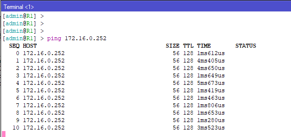
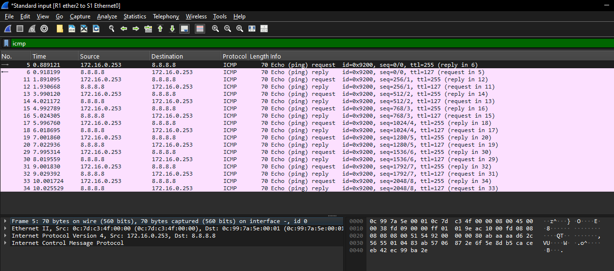
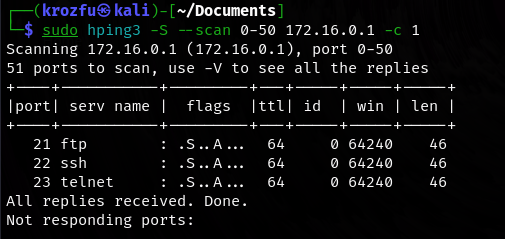
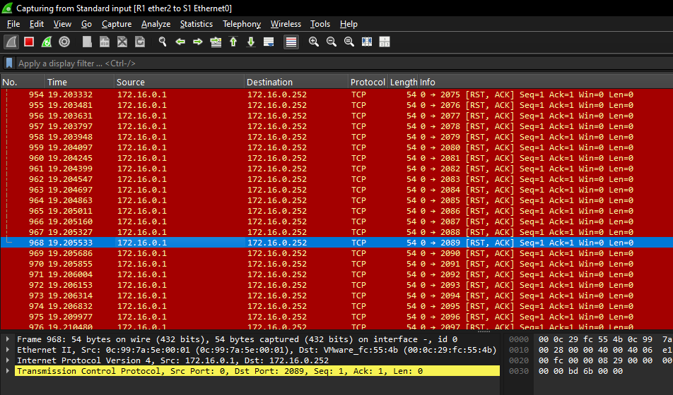

CONFIGURACIÓN NAT Y ATAQUE CON HPING MIKROTIK
Configuración de la topología de red
Se importaron tres routers Mikrotik con la versión 7.11.2, utilizando GNS3 para establecer la conexión y simular su funcionamiento. Conforme a la topología definida, se configuraron los tres routers, cada uno con su respectiva subred de conexión, manejando la interfaz de WAN para salir a internet y una interfaz de LAN para el manejo local de los dispositivo a utilizar en este laboratorio.
Identidad de cada router
Se configuró la identidad para cada router y poder manejarlos de una manera más fácil.
Router 1
Router 2
Router 3
Configuración de red NAT
Utilizando la configuración de red NAT para conectarnos con Winbox de la aplicación local donde se está administrando la conexión con el router R1.
Configuración de la Red LAN de la red para proporcionar NAT a la conexión de la red y poder acceder a las diferentes configuraciones de proveer internet a los dos routers y máquina de windows 10 para proveer su configuración.
Configuramos la dhcp para proveer una IP a la red LAN que se creó para los dos routers.
Se crea una dirección IP para la interfaz de red ether2-LAN para proveer de una dirección de red válida.
Para configurar el NAT y tener acceso a internet a traves de los dos routers conectados a la interfaz LAN del R1, creamo la siguiente teconfiguracion de NAT con masquerade.
Regla de firewall para internet con sus diferentes DNS de salida a internet.
Configuración de DHCP en el router
Prueba de conectividad dentro del rango configurado
Al configurar el DHCP al servidor y las reglas de NAT, observamos que ya no genera una dirección de red dentro del rango configurado y con las reglas de firewall pertinentes de mikrotik.
Traza ICMP desde el router principal hacia la máquina host configurada.

Y me guarda en la tabla de ARP las diferentes configuraciones de la máquina conectada.
Y de acuerdo a esas configuraciones tenemos una asignación por DHCP a los routers R2 y R3, con su respectiva IP.
Investigando tráfico en tiempo real con TORCH
Se va a realizar el análisis de tráfico dentro de la red LAN para el tráfico entre los diferentes routers conectados a la LAN.
Tráfico desde R2 y R3
Se realiza un tráfico hacia internet desde el R3, y analizamos el tráfico que se genera con TORCH.
Resultado se logra ver el tráfico que se genera con estos paquetes enviados desde R2 y R3 hacia internet.
Y se puede observar el diferente tráfico que se genera y mirando los anchos de banda que se van generando por cada petición.
Tráfico capturado con Wireshark
Para este método se realiza la captura en la interfaz de red de LAN con el siguiente comando para capturar una traza ICMP que se envía desde R3.
En la topología se colocó a escuchar en el punto de unión entre el switch y el R1, donde está nuestro punto de control con mikrotik como puerta de enlace hacia la WAN.
Paquete capturado con wireshark

Ataque a la red utilizando hping3
La función de hping3 viene preinstalada en las herramientas de Kali Linux, con lo cual vamos hacer uso de ella para esta actividad.
Simulación de tráfico y pruebas de conectividad
Con el siguiente comando podemos ver nuestra conectividad y poder conocer las maquinas que estan conectadas en nuestra red
Se puede observar con el escaneo las IP de los routers R1, R2, R3, ya tenemos las IPs y ahora procedemos a realizar algunas pruebas de conectividad.
- Utilizando ping hacia los routers e internet
Enviamos una traza ICMP a los diferentes router e internet para poder observar si tenemos conectividad.
- Utilizando traceroute hacia los routers e internet
Los paquetes enviados hacia internet realizan la búsqueda del camino hasta llegar al dominio de google, con lo que se puede observar que hay conectividad.
El traceroute realizada a los routers se puede observar que es directo ya que está conectado directamente a la red LAN donde se encuentra conectados y la ruta es más directa y rápida de encontrar.
- Utilizando hping3 para escaner algunos dominios
Este comando realizará un traceroute hacia www.google.com utilizando paquetes ICMP en lugar de los paquetes UDP que utiliza por defecto el comando traceroute. El comando mostrará la lista de routers por los que pasan los paquetes en su camino hacia www.google.com, y dado que se usa -V, se dará información detallada sobre cada salto.
En el siguiente comando se realiza un escaneo SYN de puertos en el rango 0 al 50 sobre la dirección R1=172.16.0.1. Está diseñado para verificar qué puertos están abiertos en el host de destino. Al usar el flag SYN (-S), hping3 simula el primer paso del proceso de conexión TCP (el handshake), pero no completa la conexión. Si un puerto está abierto, el host responderá con un paquete SYN-ACK; si está cerrado, el host responderá con un paquete RST.

Ataques simulados con hping3
Vamos a realizar un ataque de inundación de peticiones hacia los routers para ver su funcionamiento y cómo se comportan.
Realizando ataque con hping3 al R2
IP Spoof Al lanzar el comando realizando un IP Spoof a la dirección de R2, con un trafico con DNS 1.1.1.1 enviando diferentes paquetes, y el trafico se ve reflejado en la interfaz de wireshark como el tráfico se envía con varios paquetes de ASK.
Captura de tráfico con wireshark
Realizando ataque con hping3 al R3
IP Spoof
Realizamos el mismo procedimiento hacia R3 y observamos el tráfico.
Cuando se realiza el ataque enviando más con hping3 con 10000 paques se observa que la carga del sistema del router R1 comienza a elevar el consumo de recursos.
En la captura de wireshark se observa las peticiones que se hacen al router.

Y cada vez que se realicen más peticiones el sistema de mikrotik, se observa un consumo de los procesos de la CPU del sistema, la capturas de consumo se realizan dentro de winbox para el router R1 de mikrotik.
Mitigación
Reglas de firewall
En las siguientes reglas de firewall están diseñadas para proteger contra ataques de SYN flood, un tipo de ataque de Denegación de Servicio (DoS) en el que el atacante envía un gran número de solicitudes TCP SYN (inicialización de conexión) con el fin de agotar los recursos del servidor.
Este comando comando redirige las nuevas conexiones TCP SYN a la cadena SYN-Protect.
/ip firewall filter add chain=input protocol=tcp\ tcp-flags=syn connection-state=new\ action=jump jump-target=SYN-Protect\ comment="Flood protect" disabled=no
Este comando permite un número limitado de conexiones nuevas por segundo (400), para mitigar ataques SYN flood.
/ip firewall filter add chain=SYN-Protect protocol=tcp\ tcp-flags=syn limit=400,5\ connection-state=new action=accept\ comment="" disabled=no
Este comando descarta cualquier conexión SYN nueva que exceda el límite, bloqueando posibles ataques que intenten sobrecargar el sistema.
/ip firewall filter add chain=SYN-Protect protocol=tcp\ tcp-flags=syn connection-state=new \ action=drop comment="Si se supera el límite de la segunda regla, será bloqueado." disabled=no
Se ejecutan en los tres router para mitigar este ataque.
Reglas de firewall configuradas
Estas reglas ya configuradas ayudan a mitigar el tráfico dentro de la red, disminuyendo los ataques que se realicen.
Recomendaciones
Filtrado de paquetes en los routers: Utiliza Access Control Lists (ACLs) en los routers para bloquear tráfico no autorizado, específicamente los paquetes que no son necesarios para las funciones de la red. Esto puede evitar escaneos de puertos y ataques de rastreo.
Habilita un firewall de inspección profunda (Deep Packet Inspection, DPI) en el router para monitorear el contenido de los paquetes y detectar comportamientos anómalos o sospechosos, como intentos de escaneo de puertos.
Prevenir ataques de escaneo de puertos como TCP SYN Cookies, donde se configure en el router o firewall la opción de habilitar la función de SYN cookies para prevenir ataques de tipo SYN flood, en los que un atacante intenta llenar la tabla de conexiones a través del envío masivo de solicitudes SYN.
Implementar VLANs (Virtual LANs) para segmentar el tráfico dentro de la red. Esto aislará diferentes tipos de dispositivos y reducirá la superficie de ataque. Los ataques como el escaneo de puertos serán limitados a la VLAN en la que se encuentre el atacante.